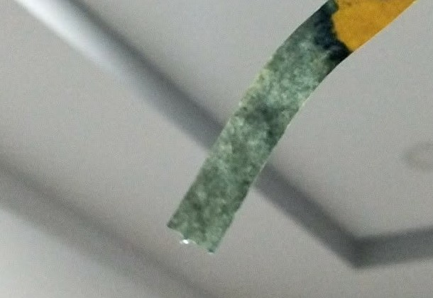
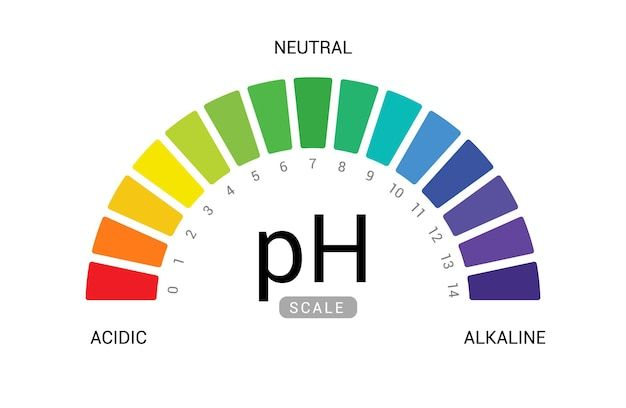

Trang sản phẩm — Hình ảnh & pH

Hình ảnh xà phòng được thử độ PH sau 1 tháng curing

So sánh với mức độ PH tiêu chuẩn
Tiêu chuẩn của xà phòng handmade
Các tiêu chuẩn phổ biến mà chúng tôi tuân thủ khi làm xà phòng thủ công:
- Nguyên liệu rõ nguồn gốc: ưu tiên dầu thực vật, tinh dầu thiên nhiên và thảo mộc an toàn.
- pH an toàn: xà phòng thủ công thường có pH cao sau khi làm (~8–10) nhưng sẽ giảm trong quá trình curing; nên kiểm tra pH nếu sản phẩm được dùng cho da nhạy cảm.
- Quy trình sạch sẽ: vệ sinh dụng cụ, cân đo chính xác, và bảo hộ an toàn khi xử lý kiềm.
- Thử nghiệm an toàn
- Bảo quản đúng cách: nơi khô, tránh ánh nắng trực tiếp và nhiệt độ cao để kéo dài tuổi thọ sản phẩm.